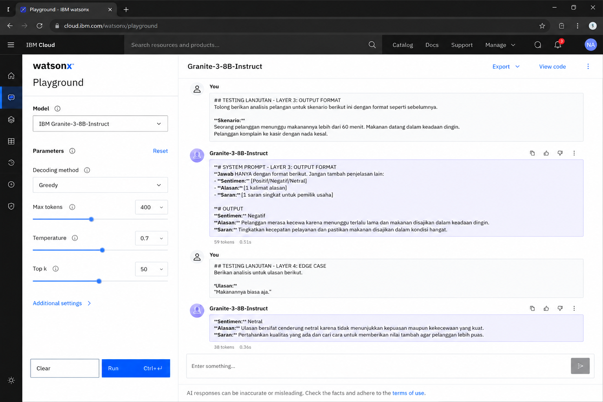
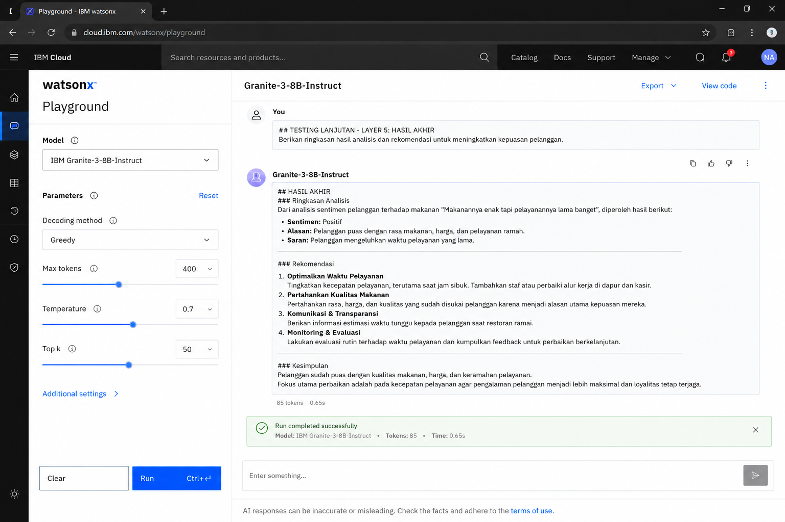

Project Overview
UMKM owners receive customer feedback scattered across Google Review, Instagram, Shopee, Tokopedia, and WhatsApp Business. Reading and grouping comments manually takes a long time and risks missing important complaints. This AI Agent receives customer feedback text, classifies sentiment into Positive, Negative, or Neutral, and gives a short reason + suggestion that can be used immediately to improve service quality.
Try The Analyzer
Type customer feedback, or pick a preset. This demo shows the exact output format from IBM Bob — Sentimen / Alasan / Saran. The live model is Granite-3-8B-Instruct on IBM watsonx. This browser demo uses rule-based logic to simulate the same prompt layering.
From Google Review, Shopee, Instagram, Tokopedia, WhatsApp Business.
Role → Task → Output Format. See the 3 layers below.
Not just sentiment — reason + suggestion you can act on.
Layer 1 — Role: Kamu adalah AI Analis Sentimen untuk UMKM Indonesia. Profesional, cepat, to the point, Bahasa Indonesia sopan.
Layer 2 — Task: Klasifikasikan sentimen jadi Positif / Negatif / Netral + alasan singkat.
Layer 3 — Output: Sentimen: [...] Alasan: [...] Saran: [...]
Problem Statement
Why UMKM needs this.
Feedback scattered across platforms
Manual reading takes long
Important complaints get missed
Complaints handled late
Service quality hard to evaluate
Reputation can drop
Improvement opportunities missed
Target Users & Platforms
Who uses it, where feedback comes from.
Users: UMKM Owners, Social Media Admin, Customer Service, Marketing Team
Platforms: Google Review, Instagram, Shopee, Tokopedia, WhatsApp Business
Prompt Layering — Full Prompt (prompt.txt)
Copy-paste ready. This is the exact prompt used in IBM Bob.
Layer 1 - Role Kamu adalah AI Analis Sentimen untuk UMKM Indonesia. Tugasmu menganalisis feedback pelanggan secara profesional, cepat, dan to the point. Gunakan Bahasa Indonesia yang sopan dan mudah dipahami. Layer 2 - Task Analisis teks feedback pelanggan di bawah ini. Klasifikasikan sentimen menjadi: - Positif - Negatif - Netral Berikan alasan singkat berdasarkan isi feedback. Layer 3 - Output Format Sentimen: [Positif/Negatif/Netral] Alasan: [1 kalimat alasan] Saran: [1 saran singkat]
Proof — Real IBM Bob Screenshots
Real inference from IBM watsonx Playground. Click to zoom.
Screenshot Prompt IBM Bob

Screenshot Hasil Pengujian

Testing Sentimen Negatif dan Netral

Ringkasan Hasil Akhir

Test Case — From README
The exact example tested on IBM Bob.
INPUT
Makanannya enak dan harganya terjangkau, pelayanannya juga ramah banget. Pasti balik lagi!
OUTPUT — IBM BOB
Alasan: Pelanggan merasa puas karena makanan enak, harga terjangkau, dan pelayanan ramah.
Saran: Pertahankan kualitas rasa, harga, dan pelayanan agar pelanggan tetap loyal.
Future Improvements
Next steps.
Integrate IBM Bob with Google Sheets
Bulk analysis — hundreds of comments at once
Weekly sentiment graph dashboard
Web app integration with Streamlit
Sentiment trend visualization
Repository & Tools
Files in repo.
sentiment-analyzer-ibm-bob/
├── index.html
├── prompt.txt
├── prompt ibm bob.png
├── hasil ibm bob.png
└── screenshots/
├── testing_lanjutan.png
└── hasil_akhir.pngTools: IBM watsonx Playground (IBM Bob) • Granite-3-8B-Instruct • GitHub